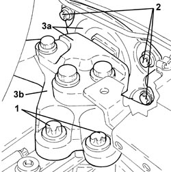
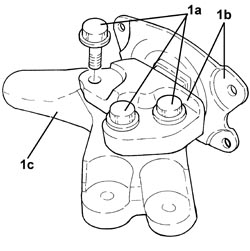
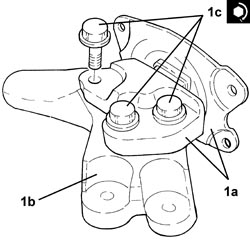
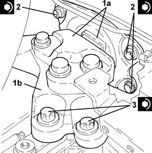
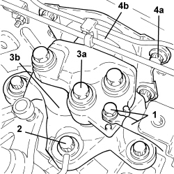
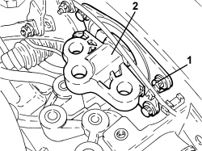

1008B30 GEARBOX SIDE SUPPORT FLEXIBLE MOUNTING(S) - REPLACE
- Path
- Procedures > 10 ENGINE > 1008 POWER UNIT SUPPORTS > 1008B POWER UNIT SUPPORT MOUNTINGS > 1008B30 GEARBOX SIDE SUPPORT FLEXIBLE MOUNTING(S) - REPLACE
- Kind
- repair procedure (removal / refitting; the operation number is the code)
- Applies to
- all engines; all production periods
- Interactive page
- https://sloeber94.github.io/elrnDB-aBrrSpdr/en/#/946001803
Applies to: engines: 2.2 JTS; all production periods
 Removing
Removing
 Refitting
Refitting- Position the vehicle on a lift.
Op. 5530B52 BATTERY SUPPORT/DRIP TRAY - R.R
- Position a hydraulic jack underneath the gearbox.
1. Undo the bolts fixing power unit gearbox side rigid support to the manual gearbox.
2. Undo the bolts fixing the gearbox side support flexible mounting to the bodyshell.
3. Remove the gearbox side support flexible mounting (3a), complete with rigid support (3b).

Applies to: engines: 2.2 JTS; all production periods
1. At the bench, undo the bolts (1a) and separate the gearbox side support flexible mounting (1b) from the rigid support (1c).

Applies to: engines: 2.2 JTS; all production periods
Refitting
Removing1. Assemble the gearbox side support flexible mounting (1a) and the rigid support (1b) and secure them tightening the new bolts (1c) to the recommended torque.
Component | Fastening | dia | Value (daNm) | Validity |
|---|---|---|---|---|
Gearbox side support flexible mounting | Bolt (to be replaced) | M12 | (support side) 6.3 - 7.7 + 45° |

Applies to: engines: 2.2 JTS; all production periods
1. Remove the gearbox side support flexible mounting (1a), complete with rigid support (1b).
2. Tighten the bolts fixing the gearbox side support flexible mounting to the bodyshell to the recommended torque.
Component | Fastening | dia | Value (daNm) | Validity |
|---|---|---|---|---|
Gearbox side support flexible mounting | Bolt | M10 | (bodyshell side) 5.4 - 6.6 |
3. Tighten the new bolts fixing the power unit gearbox side support to the manual gearbox to the recommended torque.
Component | Fastening | dia | Value (daNm) | Validity |
|---|---|---|---|---|
Gearbox side power unit rigid support | Bolt (to be replaced) | M12 | (gearbox side) 6.3 - 7.7 + 45° |
- Remove the hydraulic jack from underneath the gearbox

Applies to: engines: 2.2 JTS; all production periods
Op. 5530B52 BATTERY SUPPORT/DRIP TRAY - R.R
- Remove the vehicle from the lift.
Applies to: engines: 3.2 JTS; all production periods
Removing
RefittingOp. 5530B52 BATTERY SUPPORT/DRIP TRAY - R.R
Op. 7055B54 UNDER ENGINE PROTECTION/GUARD - R.R.
- Position an arm lift underneath the gearbox.
1. Undo the bolt and release the earth lead from the gearbox.
2. Undo the bolts fixing the rigid power unit support to the gearbox.
3. Undo the bolts (3a) fixing the flexible mounting to the rigid support; remove the rigid support (3b) from the gearbox.
4. Undo the bolts (4a) securing the flexible mounting (4b) to the bodyshell and remove it.

Applies to: engines: 3.2 JTS; all production periods
Refitting
Removing- Fit the flexible mounting in its housing and secure it to the bodyshell tightening the bolts to the recommended torque.
Component | Fastening | dia | Value (daNm) | Validity |
|---|---|---|---|---|
Gearbox side flexible mounting to body | Bolt | M10 | 5.4 ÷ 6.6 |
- Place the rigid support in its housing and secure it to the flexible mounting tightening the bolts to the recommended torque.
Component | Fastening | dia | Value (daNm) | Validity |
|---|---|---|---|---|
Gearbox side flexible mounting to mount | Bolt (to be replaced) | M12 | 6.3 ÷ 7.7 + 45° |
- Tighten the bolts securing the rigid power unit support to the gearbox to the specified torque.
Component | Fastening | dia | Value (daNm) | Validity |
|---|---|---|---|---|
Gearbox side power unit rigid support to gearbox | Bolt (to be replaced) | M12 | 6.3 ÷ 7.7 + 45° |
- Connect the earth lead to the gearbox and secure it using the bolt.
- Remove the arm lift positioned underneath the gearbox.
Op. 7055B54 UNDER ENGINE PROTECTION/GUARD - R.R.
Applies to: engines: 2.4 JTD 20v; all production periods
Removing
RefittingOp. 5530B52 BATTERY SUPPORT/DRIP TRAY - R.R
- Position a hydraulic jack underneath the gearbox.
1. Undo bolts (1a), (1b), then remove power unit gearbox side support flexible mounting (1c).

Applies to: engines: 2.4 JTD 20v; all production periods
Refitting
Removing- Place the power unit gearbox side support flexible mounting in its housing and secure it by tightening the bolts to the recommended torque.
Component | Fastening | dia | Value (daNm) | Validity |
|---|---|---|---|---|
Gearbox side flexible mounting to body | Bolt | M10 | 5.4 ÷ 6.6 |
Component | Fastening | dia | Value (daNm) | Validity |
|---|---|---|---|---|
Gearbox side flexible mounting to mount | Bolt (to be replaced) | M12 | 6.3 ÷ 7.7 + 45° |
- Remove the hydraulic jack from beneath the gearbox.
Applies to: engines: 3.2 JTS; all production periods; only with equipment: C.A.E.
Removing
RefittingOp. 5530B52 BATTERY SUPPORT/DRIP TRAY - R.R
Applies to: engines: 3.2 JTS; all production periods; only with equipment: C.A.E.
1. Undo the bolts securing the flexible mounting to the bodyshell.
2. Lower the power unit using the hydraulic jack as necessary and remove the flexible mounting.

Applies to: engines: 3.2 JTS; all production periods; only with equipment: C.A.E.
Refitting
Removing- Fit the flexible mounting in its housing and secure it to the body tightening the bolts to the recommended torque.
Component | Fastening | dia | Value (daNm) | Validity |
|---|---|---|---|---|
Gearbox side support flexible mounting | Bolt | M10 | (bodyshell side) 5.4 - 6.6 |
Op. 1008A42 POWER UNIT RIGID SUPPORT - GEARBOX SIDE - R.R.
Op. 7055B54 UNDER ENGINE PROTECTION/GUARD - R.R.
Topics linked from this page (4)
- 1008A42 POWER UNIT RIGID SUPPORT - GEARBOX SIDE - R.R.
- 5530B10 BATTERY - R+R
- 5530B52 BATTERY SUPPORT/DRIP TRAY - R.R
- 7055B54 UNDER ENGINE PROTECTION/GUARD - R.R.